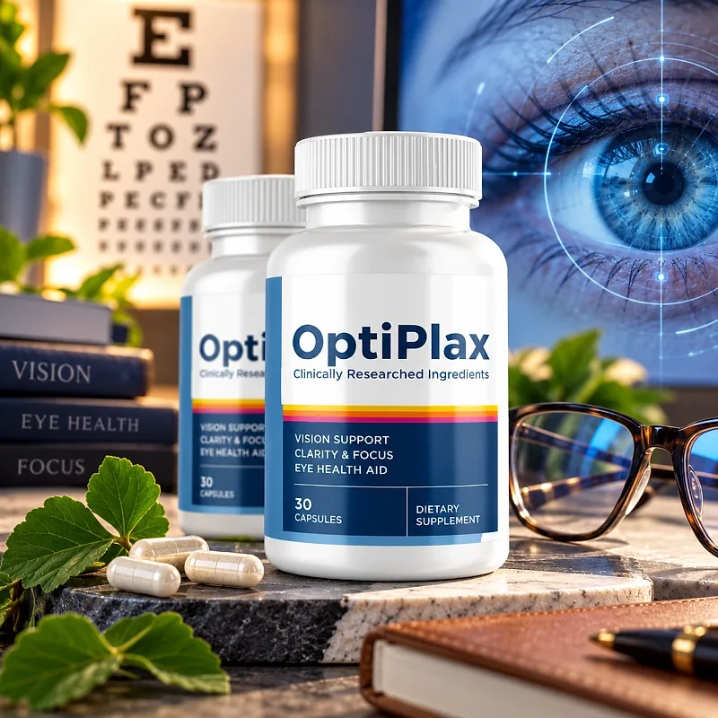
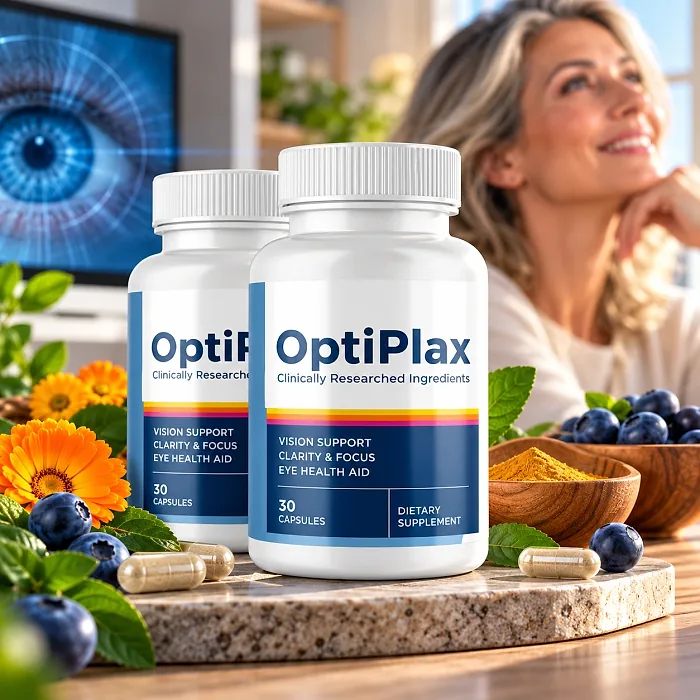
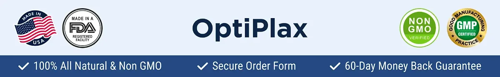

What Is OptiPlax And How Does It Work?
OptiPlax is a dietary supplement in capsule form designed to support healthy vision, visual clarity and focus, and overall eye health for adults who want to address the eye strain, blurriness, and tired eyes that can build up with age, screens, and long days through a natural, dependable approach — without complicated routines.
The label sums up its purpose in three lines: Vision Support, Clarity & Focus, and Eye Health Aid. To get there, it uses a 500 mg proprietary blend built mostly from the sea: Kelp, Wakame, Astaxanthin, Chlorella, and Ecklonia Cava, along with a kelp extract rich in fucoxanthin, nori, spirulina, and sea buckthorn oil.
According to the official website, the formula is a carefully crafted blend of nutrients that helps nourish and protect the delicate tissues of the eye and supports its natural cleansing processes, particularly for adults who prefer one simple daily capsule over multiple products.
Rather than acting as a quick fix, OptiPlax focuses on antioxidant and nutritional support over time. Astaxanthin and fucoxanthin are carotenoids, natural pigments known for their antioxidant activity, and sea vegetables provide a wide range of minerals and plant compounds.
With consistent daily use, a formula of this kind is intended to support more comfortable eyes, steadier focus, and long-term eye wellness, especially when combined with a diet rich in colorful vegetables, regular breaks from screens, good sleep, and routine eye exams.
From a practical standpoint, OptiPlax is one capsule a day with a glass of water, with 30 capsules in each bottle, a one-month supply.
According to the label, OptiPlax is made in the USA from foreign and domestic ingredients in an FDA-registered facility that follows Good Manufacturing Practices, and the official website describes it as natural, non-GMO, and free of stimulants.
OptiPlax Ingredients
Every capsule of OptiPlax contains a 500 mg proprietary blend listed on the Supplement Facts panel. The official website highlights five of its ingredients, chosen to support vision, clarity, and eye health:
Kelp Powder and Kelp Extract (Laminaria japonica): Brown seaweeds rich in minerals; the extract is standardized to 10% fucoxanthin, a carotenoid with antioxidant activity.
Wakame Extract: An edible seaweed common in Japanese cuisine and a natural source of fucoxanthin and minerals.
Astaxanthin 2% (Haematococcus pluvialis): A red carotenoid from microalgae studied for eye comfort and antioxidant protection.
Chlorella Powder: A green microalga rich in chlorophyll, lutein, and nutrients.
Ecklonia Cava Brown Seaweed Extract: A seaweed from the coasts of Korea and Japan, known for polyphenols called phlorotannins.
The same blend also lists Nori yaki powder, Spirulina powder (Arthrospira platensis), and Sea Buckthorn oil, and the label does not show the amount of each ingredient. The other ingredients are gelatin (the capsule), brown rice flour, and silicon dioxide, so the capsules are not vegetarian.
OptiPlax is designed for daily use, offering a natural, non-prescription approach to supporting eye health.
OptiPlax Side Effects
OptiPlax is generally considered well tolerated and is designed for adults of different ages and lifestyles who are looking for a gentle, natural approach to eye health, especially those who prefer one capsule a day to support vision, focus, and eye comfort.
The official website describes the formula as natural, non-GMO, and free of stimulants, and the label states that it is manufactured in an FDA-registered facility that follows Good Manufacturing Practices, reinforcing consistency and quality.
With no widespread reports of serious side effects, OptiPlax is generally considered a well-tolerated option. A few points deserve attention: kelp and other seaweeds are natural sources of iodine, so people with a thyroid condition or who take thyroid medication should talk to their doctor first; people with seafood or seaweed allergies should read the label carefully; and the capsule is made of gelatin. Sudden changes in vision, eye pain, or flashes of light need an eye doctor, not a supplement. It is not intended to diagnose, treat, cure, or prevent any disease, and individual results may vary.
According to the label, pregnant or nursing mothers, children under the age of 18, and individuals with a known medical condition should consult a physician before using OptiPlax, ensuring it fits safely within their personal wellness plan.
OptiPlax Dosage
The recommended OptiPlax dosage is one capsule a day, and it is designed to fit easily into a daily routine. There is nothing to mix, measure, or prepare.
The recommended approach, as printed on the label, is that adults take one (1) capsule daily, with 6 to 8 oz of water, or as directed by a healthcare professional. Taking it with a meal that contains some fat may help, since carotenoids such as astaxanthin are fat-soluble.
For best results, consistency is key. Each bottle contains 30 capsules, a one-month supply, and the official refund policy recommends using the product for at least 3 months before reaching a conclusion, which is why many people choose a longer routine.
There is no need for complex schedules. One simple daily capsule is designed to build support gradually alongside a diet rich in leafy greens and colorful vegetables, regular breaks from screens, and good sleep. The label also advises storing the bottle in a cool, dry place and not using it if the safety seal is damaged or missing.
As with any dietary supplement, it's important not to exceed the recommended dose and to check the label on your bottle. OptiPlax works best when used regularly, combined with healthy habits and routine eye exams.
OptiPlax – Refund Policy
You can order OptiPlax with confidence, knowing that every purchase is protected by a 60-day money-back guarantee counted from the day the package is delivered. This allows you to try the formula and decide if it delivers the support you expect.
According to the refund policy on the official website, customers who are not fully satisfied can request their money back within 60 days of delivery. The policy recommends using the product for at least 3 months before deciding, and asks customers to send back all the bottles, whether they are empty, opened, or sealed, together with the packing slip. The return shipping cost is paid by the customer.
How the refund process works: If you decide OptiPlax is not right for you, email customer support with "Refund Request" in the subject line, then send all the bottles to 285 Northeast Ave, Tallmadge, OH 44278, with a note containing your full name, email, and order number. Once the package is received, your refund is processed in a few days, and you receive an email confirming it.
Customer Support Contact Information: contact@optiplax-product.com, as printed on the product label. Order questions can also be sent to BuyGoods, the retailer.
Refund Processing Time: According to the policy, the refund is processed within a few days after the package is received, and the time for the amount to appear on your statement depends on your bank or card company.
This refund policy is designed to give customers a clear and transparent experience when trying OptiPlax.
OptiPlax – Where To Buy
OptiPlax is sold through its official website, so if you decide to try it, it's important to be careful about where you purchase it. The official website is the only sales channel the manufacturer lists, and it does not point to marketplaces such as Amazon, eBay, or Walmart.
Listings on third-party platforms may look similar but cannot be verified as authentic, raising concerns about safety, quality, and freshness. Products purchased outside the official source may not be covered by the 60-day money-back guarantee.
For this reason, it makes sense to purchase OptiPlax only through the official website. Buying directly from the official source ensures you receive the authentic original product, made in the USA, with access to customer support and the full guarantee. According to the official website, every order is a one-off purchase with no hidden autoship, and orders are processed by BuyGoods, the retailer named on the site.
To avoid counterfeit batches and ensure maximum quality, always verify that you are ordering from the official OptiPlax website before completing your purchase.
To ensure you’re getting the authentic product, most users choose to visit the official website.
Is OptiPlax A Scam?
Based on what the official website and the product label disclose, OptiPlax does not appear to be a scam. It is a real capsule supplement, sold through an established retailer, with a published Supplement Facts panel, a distributor address in Tallmadge, Ohio, a support email, and a written refund policy.
The ingredients used in OptiPlax — Kelp, Wakame, Astaxanthin, Chlorella, and Ecklonia Cava, among others — are well known in the nutrition field, and the label publishes the full list and the total amount of the blend.
There are fair points of criticism, though. The official website explains the formula with the idea of an "optical plaque" that builds up in the eye and can be flushed out, and its FAQ says the formula attacks vision loss where it begins. Those are strong claims that a dietary supplement cannot back up, and they go further than the label, which only promises vision support, clarity and focus, and eye health aid. The website also mentions thousands of reviews but publishes no written testimonials, so this review does not quote any.
Results vary from person to person, and no supplement replaces an eye exam or the treatment an eye doctor prescribes.
OptiPlax is backed by a 60-day money-back guarantee, and the official FAQ says every order is a one-off purchase with no hidden autoship. The refund steps, including sending back all bottles and paying the return shipping, are published on the official website.
If you're looking for a simple daily capsule to support vision, focus, and eye health, OptiPlax is worth considering — especially when purchased directly from the official website.
For those who want to verify product details or check current availability, the official OptiPlax website remains the safest option.

Check Availability On Official Website
